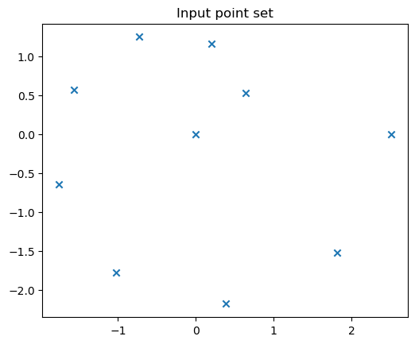
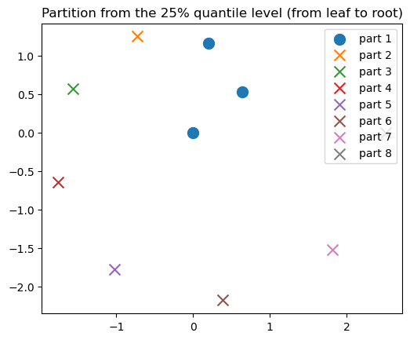
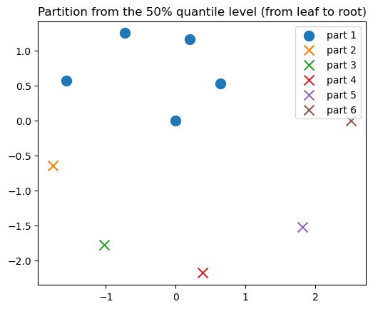
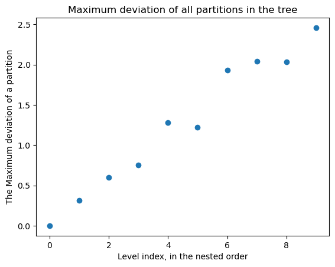
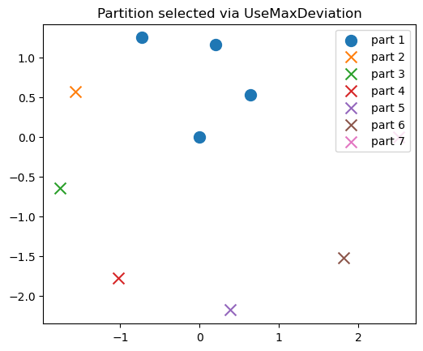
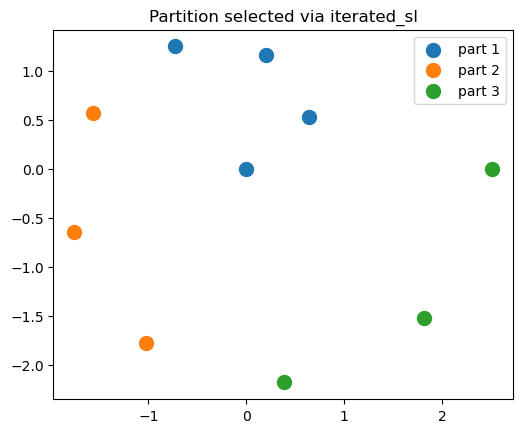

Load dependencies for this demo
run using Pkg; Pkg.add("name-of-dependency) if you have missing dependencies.
import SingleLinkagePartitions as SL
import PythonPlot as PLT # visualization
using LinearAlgebra
import Statistics
import Random
Random.seed!(25)
PLT.close("all")
fig_num = 11Set up data
T = Float64
D = 2;
dist_callable = SL.EuclideanDistance()SingleLinkagePartitions.EuclideanDistance()oracle set to one branch of Fermat's spiral
f = tt -> (sqrt(tt) .* [cos(tt); sin(tt)]);sample data from the oracle to get our 2-D point set, X.
N = 10
ts = LinRange(0, 2 * π, N)
X = collect(f(t) for t in ts);visualize the data.
plot_x = collect(X[n][begin] for n in eachindex(X))
plot_y = collect(X[n][begin + 1] for n in eachindex(X))
PLT.figure(fig_num)
fig_num += 1
PLT.scatter(plot_x, plot_y, marker = "x")
PLT.axis("scaled")
PLT.title("Input point set")
PLT.gcf()
Single-linkage clustering
Single-linkage clustering is a method to generate a partition tree, which is a set of nested partitions.
Allocate state/buffer.
s = SL.SLINKState(T, N)SingleLinkagePartitions.SLINKState{Float64}([6.9069441482732e-310, 6.9069441482748e-310, 1.5e-323, 1.9e-322, 1.0e-323, 1.0e-323, 0.0, 0.0, 0.0, 0.0], [6.90694414801076e-310, 6.9069441479902e-310, 6.90694414797914e-310, 6.90694414799495e-310, 6.9069441479918e-310, 6.9069441479839e-310, 6.906944148006e-310, 6.90694414800443e-310, 6.9069441480139e-310, 6.9069441480155e-310], [139798105902544, 139798105904752, 139798105904784, 139798105904816, 139798105904848, 139798105904880, -5623792469277868032, 139798105904336, 139798105908080, 139798105908080])Run the SLINK algorithm. This computes the essential data required to construct the partition tree.
SL.slink!(s, dist_callable, X)Construct all partitions, indexed from 0 to get_max_level(s).
partition_tree = SL.construct_partition_tree(s)10-element Memory{Memory{Memory{Int64}}}:
[[1], [2], [3], [4], [5], [6], [7], [8], [9], [10]]
[[1], [2, 3], [4], [5], [6], [7], [8], [9], [10]]
[[1, 2, 3], [4], [5], [6], [7], [8], [9], [10]]
[[1, 2, 3, 4], [5], [6], [7], [8], [9], [10]]
[[1, 2, 3, 4, 5], [6], [7], [8], [9], [10]]
[[1, 2, 3, 4, 5, 6], [7], [8], [9], [10]]
[[1, 2, 3, 4, 5, 6, 7], [8], [9], [10]]
[[1, 2, 3, 4, 5, 6, 7, 8], [9], [10]]
[[1, 2, 3, 4, 5, 6, 7, 8, 9], [10]]
[[1, 2, 3, 4, 5, 6, 7, 8, 9, 10]]Visualize a few partitions at different levels
marker_size = 100.5
max_level = SL.get_max_level(s)925 percent from leaf (all singleton parts) to root (every point is in the same part).
level = round(Int, Statistics.quantile(0:max_level, 0.25))
partition = SL.construct_partition(s, level)
title_string = "Partition from the 25% quantile level (from leaf to root)"
ARGS = (partition, title_string, X, fig_num, marker_size)
partition, title_string, X, fig_num, marker_size = ARGS
PLT.figure(fig_num)
fig_num += 1
for k in eachindex(partition)
X_part = X[partition[k]]
plot_x = collect( X_part[n][begin] for n in eachindex(X_part) )
plot_y = collect( X_part[n][begin+1] for n in eachindex(X_part) )
if length(X_part) < 2
PLT.scatter(plot_x, plot_y, s = marker_size, label = "part $k", marker = "x")
else
PLT.scatter(plot_x, plot_y, s = marker_size, label = "part $k")
end
end
PLT.axis("scaled")
PLT.title(title_string)
PLT.legend()
PLT.gcf()
50 percent from leaf (all singleton parts) to root (every point is in the same part).
level = round(Int, Statistics.quantile(0:max_level, 0.5))
partition = SL.construct_partition(s, level)
title_string = "Partition from the 50% quantile level (from leaf to root)"
ARGS = (partition, title_string, X, fig_num, marker_size)
partition, title_string, X, fig_num, marker_size = ARGS
PLT.figure(fig_num)
fig_num += 1
for k in eachindex(partition)
X_part = X[partition[k]]
plot_x = collect( X_part[n][begin] for n in eachindex(X_part) )
plot_y = collect( X_part[n][begin+1] for n in eachindex(X_part) )
if length(X_part) < 2
PLT.scatter(plot_x, plot_y, s = marker_size, label = "part $k", marker = "x")
else
PLT.scatter(plot_x, plot_y, s = marker_size, label = "part $k")
end
end
PLT.axis("scaled")
PLT.title(title_string)
PLT.legend()
PLT.gcf()75 percent from leaf (all singleton parts) to root (every point is in the same part).
level = round(Int, Statistics.quantile(0:max_level, 0.75))
partition = SL.construct_partition(s, level)
title_string = "Partition from the 75% quantile level (from leaf to root)"
ARGS = (partition, title_string, X, fig_num, marker_size)
partition, title_string, X, fig_num, marker_size = ARGS
PLT.figure(fig_num)
fig_num += 1
for k in eachindex(partition)
X_part = X[partition[k]]
plot_x = collect( X_part[n][begin] for n in eachindex(X_part) )
plot_y = collect( X_part[n][begin+1] for n in eachindex(X_part) )
if length(X_part) < 2
PLT.scatter(plot_x, plot_y, s = marker_size, label = "part $k", marker = "x")
else
PLT.scatter(plot_x, plot_y, s = marker_size, label = "part $k")
end
end
PLT.axis("scaled")
PLT.title(title_string)
PLT.legend()
PLT.gcf()
We can see that only a single part gets larger and larger. This is because the minimum distance between all parts for a partition at a given level is one that involves the large part. This characteristic with single-linkage clustering is known as chaining in some literature. It may be something that is desirable or undesirable, depending on the application.
Specify a level (i.e. partition)
The user can specify options to pick a partition from the partition tree generated by single-linkage clustering. The options are implemented as data types: UseMaxDeviation, UseSLDistance, and UseCumulativeSLDistance. We'll focus on UseMaxDeviation in this demo. The docstrings for UseSLDistance and UseCumulativeSLDistance should be self-explantory, and the method pick_level that we'll describe is impelemnted for them as well.
UseMaxDeviation: Deivation from part/cluster mean/centroid.
Please review the terminology section before proceeding. First, specify an allowed deviation distance.
max_dev = maximum(SL.get_dissimilarities(s)) / 2 # we arbitrarily choose half of the largest single-linkage distance from the tree.
level_config = SL.UseMaxDeviation(max_dev)
level = SL.pick_level(level_config, s, X) # pick level via binary search.
partition = SL.construct_partition(s, level)7-element Memory{Memory{Int64}}:
[1, 2, 3, 4]
[5]
[6]
[7]
[8]
[9]
[10]We see that the maximum deviation sequence when ordered by the nesting order of the partition tree (i.e. from level = 0 the leaf to level == get_max_level(s) the root) is approximately monotonic.
max_ds = collect(
SL.compute_max_deviation(X, s, level)
for level in 0:(SL.get_max_level(s))
)
PLT.figure(fig_num)
fig_num += 1
PLT.plot(0:(SL.get_max_level(s)), max_ds, "o")
#PLT.axis("scaled")
PLT.xlabel("Level index, in the nested order")
PLT.ylabel("The Maximum deviation of a partition")
PLT.title("Maximum deviation of all partitions in the tree")
PLT.gcf()
Since it is approximately monotonic, we use a bracketed binary search to select a partition such that its maximum deviation is approximate the best match from all the partitions to the specified value max_dev. We then do a linear search from this search result in the reverse nesting order to find the first partition that has a smaller maximum deviation. These procedures are implemented in pick_level that specializes for level_config::UseMaxDeviation. Please see the terminology section for details. One can alternatively do a linear search over max_ds to pick a level, which is easy to implement yourself given max_ds, which was computed earlier.
level = SL.pick_level(level_config, s, X) # pick level via binary search.
partition = SL.construct_partition(s, level) # instantiate the partition given the level and tree.
println("Target maximum deviation: ", max_dev)
println("Selected partition's maximum deviation: ", SL.compute_max_deviation(X, s, level));Target maximum deviation: 1.2533141373155001
Selected partition's maximum deviation: 0.7540138928489456
Visualize
title_string = "Partition selected via UseMaxDeviation"
ARGS = (partition, title_string, X, fig_num, marker_size)
partition, title_string, X, fig_num, marker_size = ARGS
PLT.figure(fig_num)
fig_num += 1
for k in eachindex(partition)
X_part = X[partition[k]]
plot_x = collect( X_part[n][begin] for n in eachindex(X_part) )
plot_y = collect( X_part[n][begin+1] for n in eachindex(X_part) )
if length(X_part) < 2
PLT.scatter(plot_x, plot_y, s = marker_size, label = "part $k", marker = "x")
else
PLT.scatter(plot_x, plot_y, s = marker_size, label = "part $k")
end
end
PLT.axis("scaled")
PLT.title(title_string)
PLT.legend()
PLT.gcf()
Iterated single-linkage to reduce chaining
If it is desirable to reduce chaining, then we can use an iterated version of pick_level. So far, only UseMaxDeviation is implemented for iteration. We need to specify the iteration, namely a discount factor-like parameter that characterizes our acceptance of a selected partition in every iteration.
acceptance_factor = 0.99;This is a value in (0,1). Close to 1 means only the parts that have a deviation that is close to the maximum deviation is added to the output partition P. A larger value for acceptance_factortend to yield fewer parts in the finalP`.
Run the iteration to assemble a partition P of X that has less chaining behavior. In general, P is not from the set of nested partitions one would get from running the vanilla single-linkage clustering on X.
P, iters_ran = SL.iterated_sl(
level_config,
dist_callable,
X;
acceptance_factor = acceptance_factor,
max_iter = 100,
)
max_dev_P = SL.compute_max_deviation(X, partition)0.7540138928489456Visualize
partition = P
title_string = "Partition selected via iterated_sl"
ARGS = (partition, title_string, X, fig_num, marker_size)
partition, title_string, X, fig_num, marker_size = ARGS
PLT.figure(fig_num)
fig_num += 1
for k in eachindex(partition)
X_part = X[partition[k]]
plot_x = collect( X_part[n][begin] for n in eachindex(X_part) )
plot_y = collect( X_part[n][begin+1] for n in eachindex(X_part) )
if length(X_part) < 2
PLT.scatter(plot_x, plot_y, s = marker_size, label = "part $k", marker = "x")
else
PLT.scatter(plot_x, plot_y, s = marker_size, label = "part $k")
end
end
PLT.axis("scaled")
PLT.title(title_string)
PLT.legend()
PLT.gcf()
This concludes the demo
nothing;This page was generated using Literate.jl.